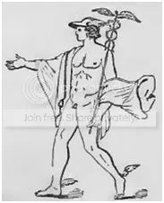
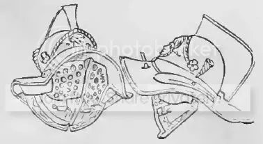

Est mihi sitque, precor, flavae tutela Minervae,
navis et a picta casside nomen habet.
Пусть охранит мой корабль приязнь белокурой Минервы;
Писан на нем ее шлем, символ названья его.
Овидий «Скорбные элегии» (Перевод С.В.Шервинского)
С обещанным в предыдущих заметках поиском корней термина галера у арабов и мардаитов придется повременить. И вот почему. В ходе обсуждения возможного финикийского следа в происхождении термина среди любителей и знатоков этимологии (http://community.livejournal.com/ru_etymology/944193.html ) неоднократно возникал вопрос о смысловом значении терминов, соответствующих галере, на латыни и греческом. Чтобы внести некоторую ясность в этот вопрос придется несколько отклониться от намеченного плана.
Здесь будет мало оригинальных идей. Проблема хорошо изучена и освещена в работах упомянутых уже Дюканжа, О.Жаля, а также в книгах: Victor Gay, Glossaire Archéologique du Moyen Age et de la Renaissance, tome premier, A- GUY (Paris, Librairie de la Société bibliographique, 1887); Anthony Rich, Dictionnaire des antiquités romaines et grecques accompagné de 2,000 gravures (Paris Librairie de Firmin Didot Frères, Fils Et Cо., 1861) , других словарях и энциклопедиях. Будут использованы, естественно, и первоисточники.
И хотя почти очевидным является происхождение латинского термина galea от греческого γαλαία, предпринимались многочисленные попытки положить в основу латинского термина латинские же корни. Остановимся на некоторых из этих попыток.
Одна из первых гипотез о происхождении термина galea связывала это название корабля со словом Galerus. Вообще-то это слово означает меховую шапку, которую носили крестьяне и охотники. Она не вызывает никаких ассоциаций со стремительным военным кораблем, каким являлась галера. Однако этим словом иногда называли и шапочку Меркурия, которая была снабжена крылышками. Такие же крылышки, которые у поэтов назывались talaria ( πέδιλα) (см. например, Virg. Æn. IV, 239), прикреплялись к лодыжкам популярного бога. Считалось, что корпус галеры можно сравнить с шапочкой Меркурия, а поднятые над водой весла – с крылышками. О.Жаль считает, что эта аналогия хромает, потому что корпус корабля представляет собой сильно удлиненный овал, в то время как шапочка по природе своей круглая.
С этим можно было бы поспорить. Вот, например, изображение Меркурия в достаточно продолговатом головном уборе, почти что в бейсболке. (Рисунок взят из упомянутой книги A.Rich'а, илл. к статье ALIPES (πτερόπους)).
Другое направление в объяснении происхождения слова galea связано со словом … galea. Помните, мы уже цитировали стих из «Грецизма» Эбергарда Бетюнского. Armo caput galea, pelagus percurro galеa. Надеваю на голову каску, моря переплываю галерой. Вот именно каска – galea – стала основой множества гипотез, связанных с происхожением названия военного гребного корабля – галеры.
(Подвернулась цитата из Павла Иовия Новокомского (Pauli Jovii Novocomensis, епископ при папе Клименте VII, историк XVI века) «Лошади Московские ниже среднего роста, но крепки и весьма быстры. Всадники вооружены саблями, пиками, железными булавами, стрелами, а некоторые и мечами; оборонительное же оружие их состоит из щитов, частию больших, как у Азиатскиx Турок, частию же малых, угловатых, с выпуклою поверхностию, как у Греков; кроме того они защищаются панцирями и покрывают голову пирамидальными шлемами.» (itеmque lorica et galea pyramidali proteguntur.). (Библиотека иностранных писателей о России. Отделение первое. Том 1. СПб, 1836) Это лирическое отступление не по теме, но все же приятно сослаться на латинские цитаты о родных палестинах).
Слово galea действительно в латинском языке означает шлем. Но в отличие от металлическог шлема – cassis – термином galea первоначально обозначалась кожаная каска, обитая медью. Однако впоследствии, когда все каски стали изготавливать из металла, к ним уже без всяких ограничений применялся термин galea. На рисунке, взятом из книги A.Rich’а, изображена одна из первых таких касок, изготовленная из бронзы; она была найдена в Помпеях.

Сторонники гипотезы, предполагающей происхождение термина galea, обозначающего тип корабля, от слова galea – каска, считали, что причиной такой взаимосвязи является использование galea–каски для украшения носовой части римских трирем. В доказательство приводилось изображение медали, впервые опубликованное Шеффером в его De militia navali (p. 156), на котором можно было видеть нос галеры, украшенный головой в римском шлеме. К сожалению, никаких других изображений на медалях и монетах того времени или текстов, подтверждающих эту гипотезу, больше обнаружено не было. Понятно, если бы галера состояла под покровительством и защитой какого-нибудь бога, как, например, в случае, который мы привели в эпиграфе, взятом из Овидия, когда корабль находился под защитой Минервы. Но ни одного случая, чтобы покровителем галеры была Минерва или, скажем, Марс в литературе не отмечено. Напрочь отвергается и гипотеза, по которой каска воодружалась на топ мачты галеры. Примеров, подтверждающих эту гипотезу, нет. О.Жаль иронизирует по этому поводу: «Понятно, если бы на топе мачты галеры, перевозящей продовольствие, была подвешена корзина для хлеба. Но зачем поднимать каску?»
Было еще много других попыток увязать название каски с названием военного корабля. Однако все они оставались в области догадок и ничем не подтверженных гипотез. И все же, несмотря на это, идея производить имя галеры от названия римского боевого головного убора оказалась очень живучей. Я хочу привести здесь очень показательный пример.
Одно из самых подробных описаний галеры, которая использовалась для перевозки паломников в Святую землю, принадлежит монаху Феликсу Фабри. Этот проповедник из доминиканского ордена родился в 1441 или 1442 году в Цюрихе, почти всю жизнь прожил в Ульме, где и умер в 1502 году. Фабри дважды совершил паломничество к Гробу господню, о чем оставил довольно подробные записки, в которых содержится и описание галеры, доставляющей паломников. Оно так конкретно и изобилует таким количеством деталей, что пространные отрывки из него мы еще неоднократно будем цитировать. Сейчас же к месту будет следующий отрывок.
“Галера – один из морских кораблей среднего размера. Это не самый большой, но и не самый маленький корабль. По-латински этот корабль называется «бирема» или «трирема». Исидорус в девятнадцатой книге “Этимологии” называет его дорма. Однако обычные люди, будь то германцы или итальянцы, называют этот корабль галерой. Судно получило это название потому, что нос имеет форму шлема, если смотреть на корабль спереди, и потому, что он встречает набегающие волны как воин.”
[Et est una de mediocribus maris maris navibus, non de majoribus, neo de minoribus. Haec navis latine dicitur biremis aut triremis. Isidorus tamen decimo nono Etymologicorum nominat eam dormam. Vulgares autem tam Italici quam Theutonici vocant eam galèam. Et hoc nomen illi navigio advenit, quia prora cassis aut galèae formam habet, e regione inspecta, et quasi homo armatus procedit contra fluctus.(Fratris Felicis Fabri Evagatorium in Terrae Sanctae, Arabiae et Aegypti. Stuttgartiae, 1843, p.117-118)]
(Для одного поста здесь уже материала достаточно. Немного выдохся. Продолжим в следующий раз.)